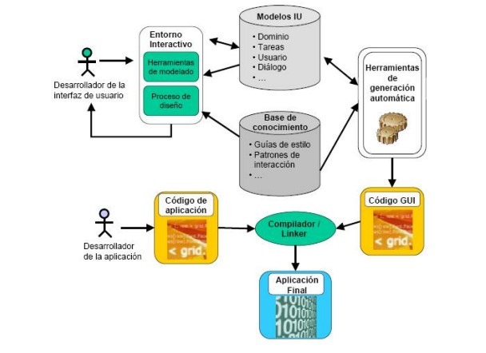

"Proposito del sitio"
Este sitio web tiene como propósito implementar el aprendizaje de Diseño de sitios Web
de la Universidad del Estado por medio de este objeto virtual como recurso de aprendizaje.
En este sitio específicamente se encontrará referenciada información con respecto a los temas de
"Fundamentos de HTML" e "interacción Humano Ordenador" complementando así su aprendizaje sobre
el Diseño de sitios Web.
Fundamentos de HTML

Editores HTML
Según Luna, A. C. (2019). Un documento HTML no es mas que un archivo de texto, por tanto para crear o
modificar archivos HTML basta con utilizar un editor de texto simple, como el
bloc de notas de windows.
Existen editores más sofisticados como Frontpage o Dreamweaver. Estos
editores presentan el código de forma más amigable, distinguiendo por ejemplo
los diferentes tipos de etiquetas con colores o incorporando herramientas
visuales para incorporar elementos, pero además de que se trata de
herramientas de pago, no son recomendables cuando se está aprendiendo,
debido a que en numerosas ocasiones introducen líneas de código
automáticamente lo cual puede confundir al alumno.
Para crear un nuevo documento HTML en un ordenador con sistema operativo
Windows, por ejemplo en el escritorio:
Hacer clic en el botón derecho del ratón (en cualquier punto del escritorio)
Pulsar nuevo

Seleccionar Documento de texto

Renombrar el archivo de Nuevo documento de texto.txt a inicio.html
Pulsar si

Al hacer doble clic sobre el archivo creado inicio.html, el sistema operativo
Windows lo ejecutará, es decir, abrirá el navegador de internet e interpretará el
código mostrándolo como una página web (en este caso mostrará una página
en blanco ya que el archivo está vacío).
Para editar el archivo e introducir código:
Abrir el Bloc de notas de Windows.
Desplegar menú Archivo
Pulsa Abrir

En la parte inferior de la ventana explorador que aparece seleccionar Todos
los archivos (*.*)
Selecciona el archivo inicio.html.
Pulsa Abrir
Desde aquí ya se puede escribir el código HTML dentro del archivo.
El código HTML
La especificación completa de la ultima version de HTML 4.0 puede consultarce
de forma gratuita en la web: http://.w3.org/TR/html401. Esta normaoficial
está escrita de maneraa muy formal y algunas secciones son dificiles de
comprender. Afortunadamente no es necesario leer las recomendaciones
oficiales para aprender a diseñar con paginas HTML.

Interaccion Humano Ordenador

ERGONOMÍA
Puede definirse la ergonomía como el grupo de disciplinas que se interesan por el estudio de
un equilibrio saludable entre las condiciones externas e internas ligadas al trabajo (actividad)
en su interacción con la biología humana. Tal equilibrio no busca otra cosa que la adaptación,
adecuación fisiológica del binomio hombre-trabajo, en una proporción de respeto. La Ergonomía
también se puede definir como la administración de los recursos biológicos en su interacción
con el medio. Factor ergonómico se remite a cualquier elemento capaz de influir o condicionar
el mecanismo de interacción hombre- máquina- entorno. Tales factores pueden ser de diversos
tipos orgánicos, psicológicos, sociales, culturales, físicos, ambientales. (Jouvencel, 2010)
DESCRIPCIÓN DEL ENFOQUE BASADO EN MODELOS
El desarrollo de Interfaces de Usuario (en adelante IUs) basado en modelos, soportado
en lo que comúnmente se conoce como MB-UIDE(Del inglés Model-Based User Interface
Development Environment.) consiste en un mecanismo para diseñar y desarrollar IUs a partir de
especificaciones a un alto nivel de abstracción (utilizando modelos declarativos) y su posterior
explotación hasta la obtención de las distintas IUs requeridas a cada momento, en función de
la información contextual que dichos modelos describen. Los modelos declarativos describen,
representan y formalizan explícitamente no solo los aspectos estáticos y dinámicos de la IU, sino
también otro tipo de facetas, artefactos y factores relevantes involucrados en el desarrollo de una
IU, entre los cuales se encuentran los diferentes requisitos de cada contexto de uso, es decir, la
información contextual a tener en cuenta en la generación de la IU.

PROCESO DE DISEÑO
La arquitectura general dentro del diseño de IUs basado en modelos aparece reflejada en la
figura siguiente. En primer lugar, el desarrollador de la IU formaliza los distintos aspectos de la IU
aplicando un proceso de diseño y utilizando una herramienta de modelado. Las herramientas de
modelado suelen ser herramientas visuales donde el usuario hace uso de una notación gráfica que
permite la especificación de los distintos aspectos de manera sencilla integrada en un entorno
interactivo. Como resultado se obtienen los distintos modelos declarativos que representan el
conocimiento que se tiene de la IU. El entorno interactivo de modelado crea y modifica
los modelos que representan el conocimiento que se tiene de la IU, haciendo uso durante todo el proceso
de una base de conocimiento donde se recopila la experiencia adquirida por los desarrolladores,
que puede consistir en guías de estilo (Smith, 1986), (Shneiderman, 1992), (Corporation, 1992),
heurísticas y patrones (Montero, 2002), (Montero F. L.-J., 2003), que guiarán la transformación
de los modelos en código. Todas estas orientaciones se pueden agrupar e identificar con el
nombre de directivas de interacción.

Mockup
Mockup este sitio